Huizen, kastelen & kloosters
Waar de familie woonde
Per tak van de familie een mapje met de plekken die in de bronnen opduiken. Klik een mapje open. Alle plaatsen staan ook op de kaart.
Roermond en omgeving
de stad van herkomst, 1400–17775 plekken
Aan de Roer en in Maasniel · 16e–17e eeuw
De Hillen-molen en de hof aan het Gebroek
De onderste watermolen op de Roer heette in de volksmond de Hillen-molen: de familie ontving er elk jaar zes mud rogge uit. Bij het testament van 1618 gingen die molenpacht en de hof aan het Gebroek in Maasniel naar Dederik. Die boerderij heette later de Lintgenshof, naar de man van zijn dochter.
Bron: Jan Ruiten, Christoffelhuis (zie hierboven).
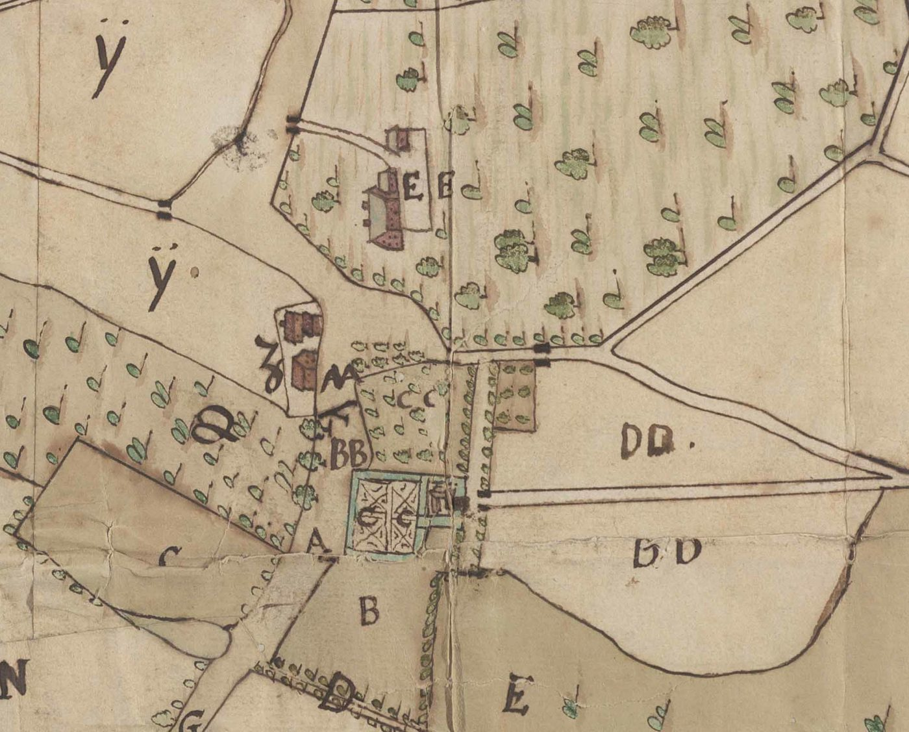
Paarlo (bij Sint Odiliënberg) · 16e eeuw–1625
Klein Paarlo
Een buitengoed dat in de 16e eeuw van de familie was. Johanna Hillen trouwde in 1570 met Willem van Merwijck, heer van Kessel, en stierf hier in 1625. Toen was het een huis met een pachtboerderij.
Wat stond er vóór het latere herenhuis? Een omgracht complex. Op deze kaart uit 1727 ligt binnen een rechthoekige gracht een groep gebouwen met een siertuin, bereikbaar via een brug. Het herenhuis op de oude foto kwam pas later en werd in de Tweede Wereldoorlog verwoest.
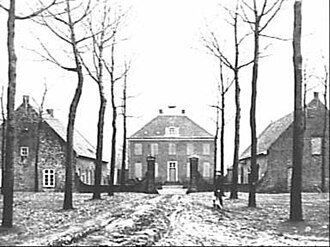
Bronnen: Wikipedia, "Klein Paarlo"; kaart: "Caerte figurative van Groot en Klein Paerdelaer" (1727), Wikimedia Commons (CC0).
.jpg)
Ohé en Laak · gebouwd ca. 1548
Kasteel Het Geudje
Catharina Hillen trouwde in 1544 met Lodewijk in der Horst. Het echtpaar liet rond 1548 dit buitenhuis bouwen, met in de gevel hun alliantiewapen: rechtsonder het Hillen-schild.

Lindanusstraat 5 (vroeger Hoge Hegstraat) · 1587–1771
Het Christoffelhuis
Jonker Johan Hillen de jonge kocht dit huis met poortweg in februari 1587 van de kinderen Schinck. Hij was schepen en in 1602 burgemeester van Roermond, en heette "de jonge" naast zijn oom, schepen Johan Hillen de oude. In zijn testament van 1618 liet hij het huis na aan zijn zoon Dederik, schepen en in 1650 burgemeester van Roermond, die er woonde met zijn vrouw Gertrudis van Dursdael. Daarna ging het via hun dochter Anna Christina, getrouwd met raadsheer Joannes Baptista Lintgens, naar haar nakomelingen. Bijna twee eeuwen bleef het zo in de familie, tot de openbare verkoop in 1771. In 1777 kochten Octave Barbou en Alexandrina van der Vrecken het huis.
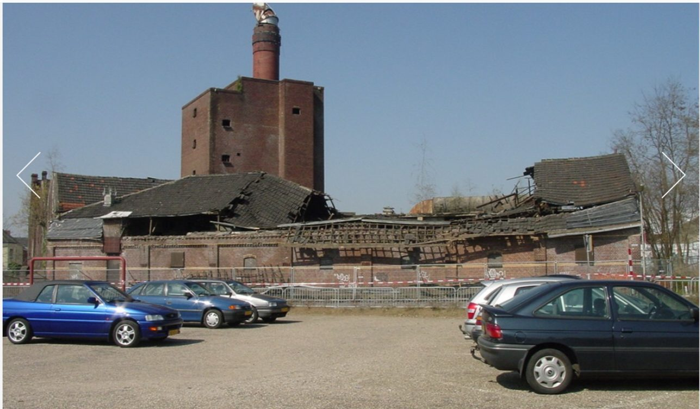
Maria Theresialaan · 1879–1896
Boterfabriek Hillen-Verbruggen
De derde zuivelfabriek van Nederland. Het pand staat er nog: het werd later Moutfabriek Limburgia en is nu een gerestaureerd rijksmonument.
Helden en Montfort
de jonker-tak "tot Helden", 1469–16752 plekken
Panningen (Helden) · vóór 1469–1675
Ten Hove, "de Hoof"
Het omgrachte stamhuis waar de tak "tot Helden" naar heet. De familie woonde vooral rond Roermond en kwam hier af en toe, maar liet zich wel in de kerk van Helden begraven. In 1675 werd het huis verkocht. Van het huis uit de Hillen-tijd bestaat geen foto; alleen een deel van het poortgebouw zit nog in een woonhuis aan de hoek Haagveld/Bergweg.
Let op: oude foto's van "Kasteel Ten Hove" online tonen bijna altijd Ten Hove in Grathem, een ander kasteel. Bronnen: De Maasgouw 1925, Stichting Limburgse Kastelen.
101_0194.JPG)
Kasteel Montfort · 1618–1627
Ambt Montfort
Jonker Reyner Hillen tot Helden was drossaard van het Ambt Montfort, de hoogste bestuurder namens de landsheer. In 1620 tekende hij als "Reinhardt von Hyllen to Helden".
Bronnen: De Maasgouw 1925; Th.J. Bais, "Hillen Roermond" (2006).
De Duitse tak
een kolonel, zijn broers en zussen, en de baronnen, 1641–17378 plekken
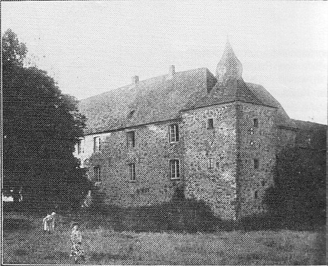
1599–vóór 1675
Reyner trouwt in het Rijnland
Jonker Reyner Hillen tot Helden, de drossaard van Montfort (zie hierboven), overleed in 1628 en liet twaalf kinderen na. Een van zijn zoons heette net als hij Reyner Hillen tot Helden. Die jonge Reyner (geboren 1599) werd kolonel en trouwde in 1641 met Maria Helena von Zweiffel, dochter van Adolf von Zweifel zu Wissem und Sülz. Hij vestigde zich bij haar in het Rijnland. Daarmee begint de Duitse tak.
Was hij echt kolonel? Ja. Een akte uit zijn eigen tijd noemt hem kolonel, en de geschiedenis van Haus Sülz zegt het ook:
- het proces van zijn schoonfamilie bij het Rijkskamergerecht noemt hem in 1646 "Reynaert von Hillen zu Helden und Sülz, Obrist" (kolonel), zie de eerste afbeelding;
- de geschiedenis van Haus Sülz noemt hem "keizerlijk kolonel en geheimraad van de keurvorst van Keulen";
- in de erfdeling van 1646 heet hij "keizerlijk kolonel van een ruiterregiment en keurkeuls kamerheer".
Een benoemingsbrief is nog niet gevonden. Hieronder de archiefbeschrijvingen zoals ze op archive.nrw.de staan. De stukken zelf zijn niet gescand.
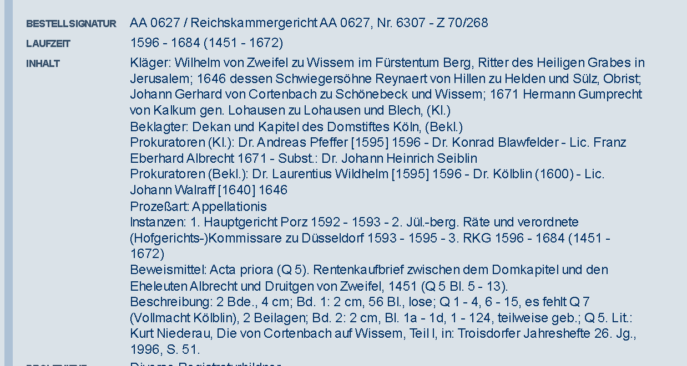
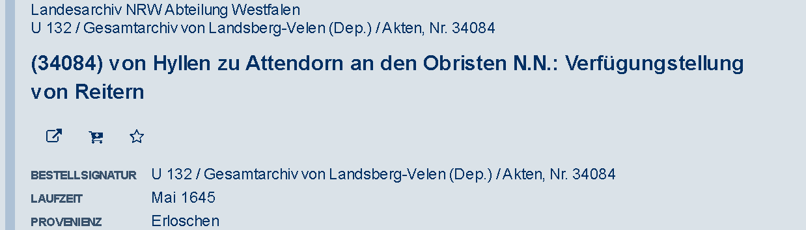
Bronnen: Landsberg-Velen, Akten 34084; Reichskammergericht 6307 - Z 70/268. Foto: Haus Sülz rond 1900, publiek domein.

Lohmar, bij Siegburg · 1646–1670
Haus Sülz: wat ze erfden
Maria Helena en haar zus Anna Klara verdeelden het erfgoed van hun vader op 16 januari 1646, op Haus Sülz zelf. Reyner en Maria Helena kregen:
- de ridderzetel Haus Sülz met gracht, tuin, vijvers, bos en weiden, en het jacht- en visrecht in de Sülz;
- de molen aan de Sülz en de hof Bockshohn;
- 30 houtrechten in de Altenforst;
- een wijngaard in Eschmar, en samen met de zus een wijngaard van vier morgen in Leubsdorf (zie hieronder).
Zus Anna Klara en haar man Von Cortenbach kregen Haus Wissem in Troisdorf. In 1651 erfden Reyner en Maria Helena ook de hof in Lommersum (bij Euskirchen), van de familie van haar moeder, Von Tomberg gen. Worms. Ze woonden op Haus Sülz tot 1670.
Bronnen: Historisches Archiv Köln, archief Raitz von Frentz: erfdeling 16-1-1646 en hof Lommersum 1651; Wikipedia (de), "Haus Sülz"; foto: Dieter Clasen, Wikimedia Commons (CC BY-SA 2.0 de).
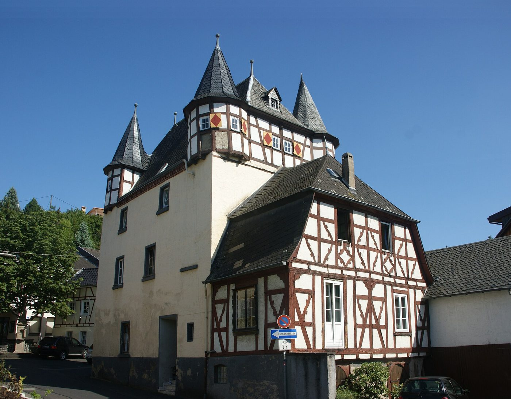
Leubsdorf aan de Rijn · erfenis Von Zweiffel, tot 1715
Burg Leubsdorf
Uit dezelfde Von Zweiffel-erfenis kwam bezit in Leubsdorf. In 1646 is het nog een wijngaard die Reyner en Maria Helena delen met zwager Von Cortenbach. Later blijkt het om meer te gaan: de helft van deze woontoren uit de 14e eeuw, met wijngaarden, land en bos, geërfd "van Junker Zwiffel". Wanneer precies de burcht zelf in de familie kwam, is niet gevonden. De toren staat er nog; het vakwerkhuis ernaast is later aangebouwd.
De halve burcht bleef in de familie tot 1715. Toen verkocht kleinzoon Ludwig Augustin hem, namens zijn moeder, vanuit België (zie Châtelet hieronder). De abdij Heisterbach kocht deze helft in 1717 en de andere in 1722.
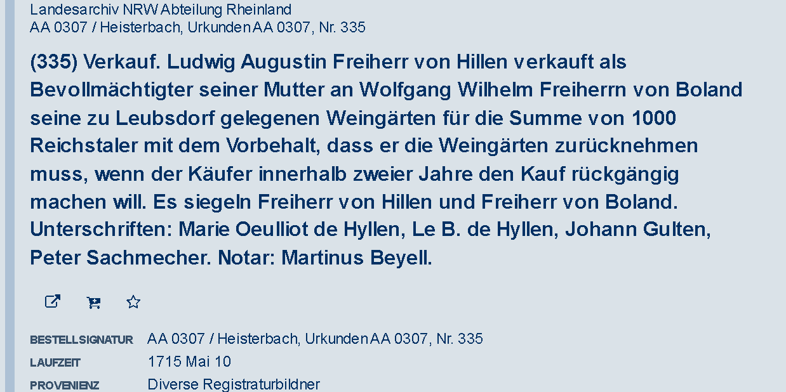
Bronnen: Heisterbach, Urkunden 335 en 338; Wikipedia (de), "Burg Leubsdorf"; foto: Tohma, Wikimedia Commons (CC BY-SA 4.0).
Hamborn en Gelre · 1596–1672
Zijn broers en zus Maria
Ook Reyners broers en zussen trokken naar het Rijnland of bleven in Gelre:
- Wilhelm Gottfried (1596–1672) werd kanunnik en pastoor, en in 1647 abt van de premonstratenzer abdij Hamborn (nu Duisburg). Dat bleef hij tot zijn dood.
- Johan (1601–1664) was luitenant-kolonel. In 1628 volgde hij zijn vader op als leenman van de tiend van Brede. Hij trouwde met Gisela von der Recke en liet een altaar maken voor klooster Saarn, waar zijn zussen abdis waren. Zijn weduwe verkocht in 1669 het goed de Holstraet om schulden af te lossen.
- Maria (geboren 1602) trouwde in 1633 met Gerard van Bronsfeld tot Holstraet. Hun dochter Gertrud Mechthild werd later abdis van Saarn.
- Van Bertram (geboren 1606) is verder niets bekend.
Bronnen: Prälaten der Abtei Hamborn; Hamborn, Urkunden 306–307 (1647); Genealogie Limburg Wiki, "Hillen"; De Maasgouw 1925.

Mülheim an der Ruhr en Dalheim · 1613–1688
Zijn zussen in het klooster: Saarn en Dalheim
Vijf zussen van Reyner gingen het klooster in. Twee werden na elkaar abdis van Saarn: Agnes (non vanaf 1624, abdis 1642–1652) en Anna Gertrud (abdis 1652–1676). Daarna volgde hun nicht Gertrud Mechthild von Bronsfeld, de dochter van zus Maria (1676–1688). Josina Clara werd abdis van Dalheim bij Wegberg. Ook Elisabeth Sibilla was non in Dalheim; zij stierf in 1632 in Saarn, waarschijnlijk op bezoek bij haar zussen. Aleidis stierf al in 1613 in Dalheim, zestien jaar oud.
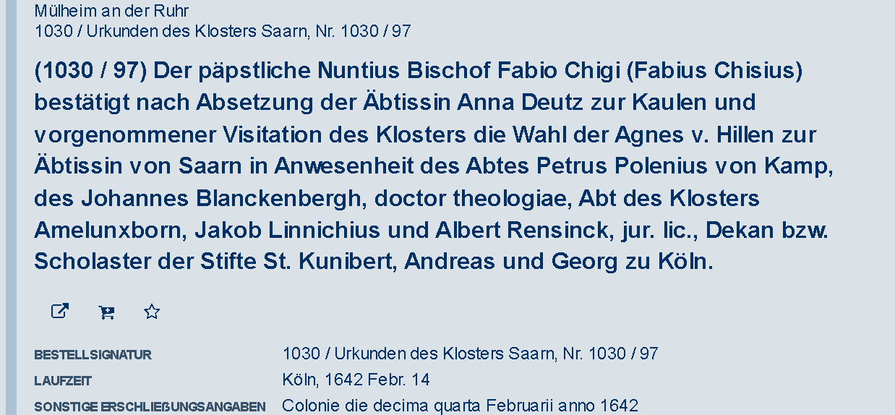
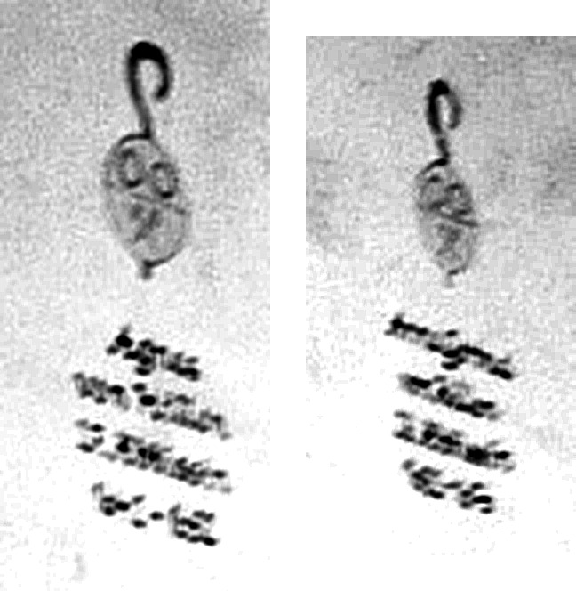

Bronnen: Germania Sacra N.F. 18 (1984); Stadtarchiv Mülheim, Urkunden Kloster Saarn 1030/97; foto: Tuxyso, Wikimedia Commons (CC BY-SA 4.0).
Sülz, Helden en Keulen · 1672–1766
Zijn kinderen: de eerste baron
Maria Helena stierf in 1672, Reyner vóór april 1675. Hun kinderen:
- Arnold Rutger noemde zich baron (Freiherr) Hillen zu Sülz. In 1675 verkocht hij het stamhuis Ten Hove in Helden (zie hierboven). Hij trouwde met Agnes Elisabeth de Merode en stierf vóór 1682, zonder bekende kinderen.
- Anna trouwde met Johan Monemit von Boland. Zo kwam Haus Sülz bij de familie Von Boland, die het in 1766 verkocht. Haar nakomelingen, de barons von Bolland, erfden ook het Hillen-voorrecht in de domkerk van Roermond (zie Châtelet hieronder).
- Johann Otto leefde nog in 1684: toen was hij in Keulen getuige bij een akte. Hij was vermoedelijk de vader van Ludwig Augustin, de laatste bekende baron.
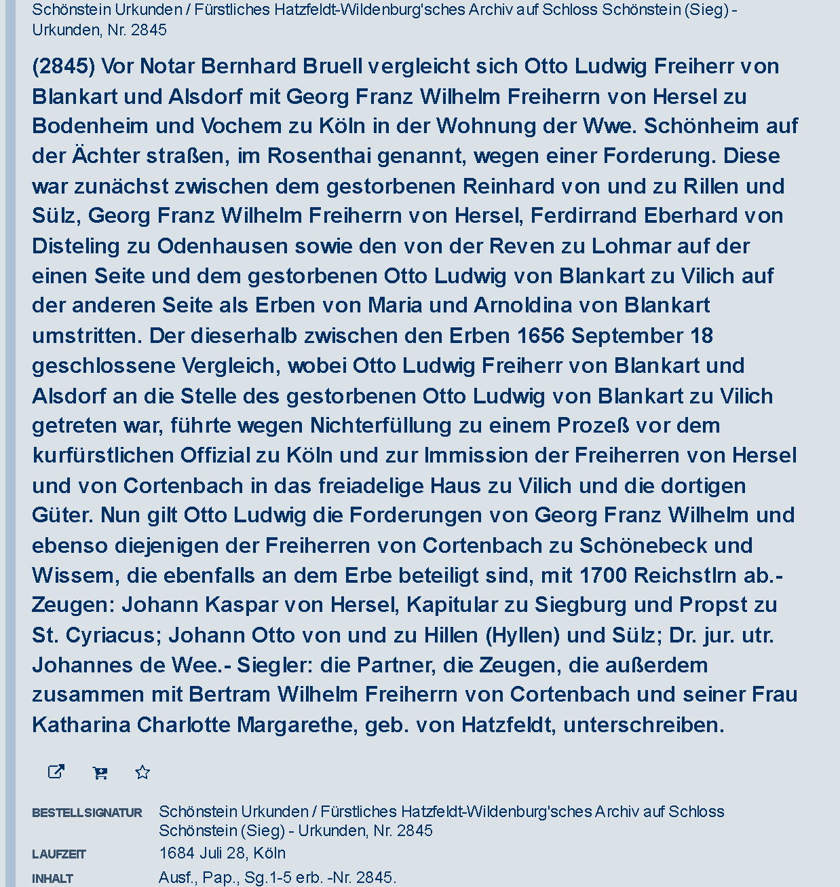
Bronnen: Schloss Schönstein, Urkunden 2845; De Maasgouw 1925; Wikipedia (de), "Haus Sülz".
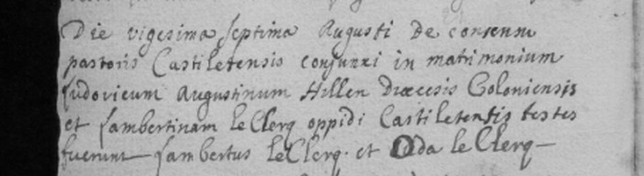
Châtelet en Châtelineau (bij Charleroi, België) · 1710–1737
Kleinzoon Ludwig Augustin: de laatste baron
In de zomer van 1710 duikt een kleinzoon van kolonel Reyner op in Châtelet, een stadje bij Charleroi. Hij heet Ludwig Augustin, noemt zich baron, en trouwt op 27 augustus met een meisje uit de stad: Lambertina le Clercq. In de huwelijksakte staat alleen dat hij "uit het bisdom Keulen" komt, precies waar Haus Sülz en Leubsdorf lagen.
Drie kinderen. In Châtelet krijgen ze drie kinderen: zoon Louis (1711) en de dochters Maria Catharina (1713) en Maria Anna Carola (1715). Bij elke doop schrijft de pastoor er netjes bij dat de vader "de heer baron" is.
Wat deed een Duitse baron in Châtelet? Het was oorlog: de Spaanse Successieoorlog. In Châtelet lagen Beierse soldaten van keurvorst Max Emanuel, die aan de Franse kant vocht. Zijn broer was de keurvorst van Keulen, de landsheer van de Hillens in het Rijnland. Het doopregister van die jaren staat vol officieren: een graaf, een kapitein, een majoor van het regiment d'Arco en de Beierse baron De Kleist. Ludwig Augustin was twee keer peter bij hun kinderen, en toen zijn eigen dochter in 1715 werd gedoopt, was de vrouw van baron De Kleist haar meter. Hij hoorde dus bij deze groep. Heel waarschijnlijk was hij zelf officier in het Beierse of Keulse leger, al staan zijn rang en regiment nergens.
Einde van de oorlog, verkoop van de burcht. In 1715 kwam de vrede en trokken de Beierse troepen weg. Datzelfde jaar verkocht Ludwig Augustin, namens zijn moeder, de halve Burg Leubsdorf (zie hierboven). In het archief in Luik liggen nog "brieven van baron Hyllen aan zijn moeder" uit dat jaar.
Weduwe en dochter. In 1724 staat Lambertina in het doopboek als "de weduwe van de baron": Ludwig Augustin was toen al overleden, ergens buiten Châtelet. Dochter Maria Anna Carola bleef ongehuwd en stierf in 1737, 22 jaar oud.
Wat werd er van zoon Louis? Na zijn doop verdwijnt hij uit de bronnen. Het antwoord komt onverwacht uit Roermond, zeventig jaar later. De familie Hillen had daar in de domkerk een oud voorrecht: bij iedere nieuwe cantor (de priester die het koorgezang leidde) mochten de nakomelingen van jonker Reiner van Hillen te Helden een kandidaat voordragen. Toen de plaats in 1781 vrijkwam, meldden zich drie partijen:
- de barons von Bolland, nakomelingen van Anna Hillen, de dochter van kolonel Reyner. Hun kandidaat kreeg de plaats;
- twee andere families die zich ook Hillen-familie noemden, maar geen nakomelingen van Reiner waren. Zij werden afgewezen;
- twee neven uit de familie van Lambertina, "als erfgenamen van de weduwe van baron de Hillen". Zij dachten dat het recht via haar bij hen was beland, maar werden ook afgewezen.
Dat laatste vertelt twee dingen. Ten eerste dat de baron van Châtelet echt een nakomeling van de Hillens van Helden was, anders had zijn weduwe dat recht nooit gehad. Ten tweede dat er in 1781 geen kinderen of kleinkinderen van Louis naar voren kwamen, alleen de neven van zijn moeder. Waarschijnlijk is Louis dus zonder kinderen gestorven en hield de baronnenlijn met hem op. Bewezen is dat niet.
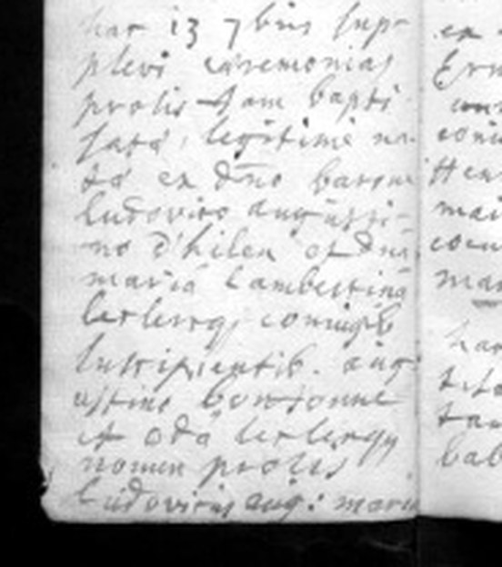
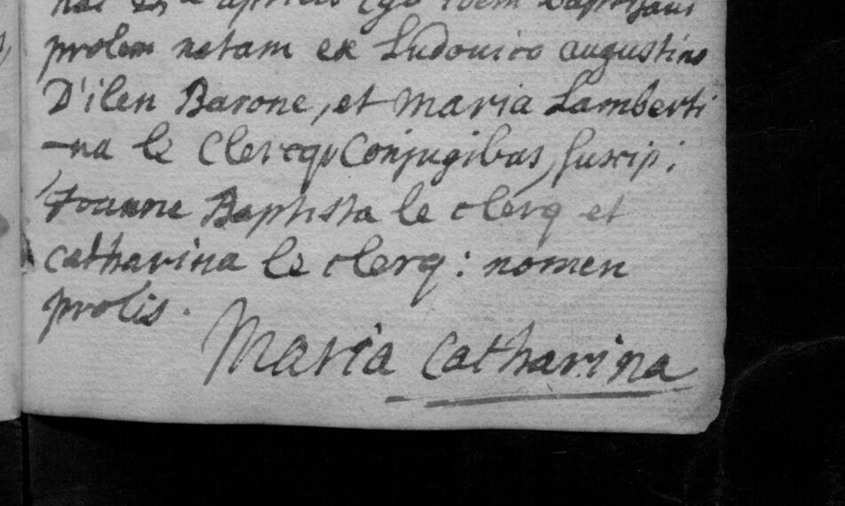
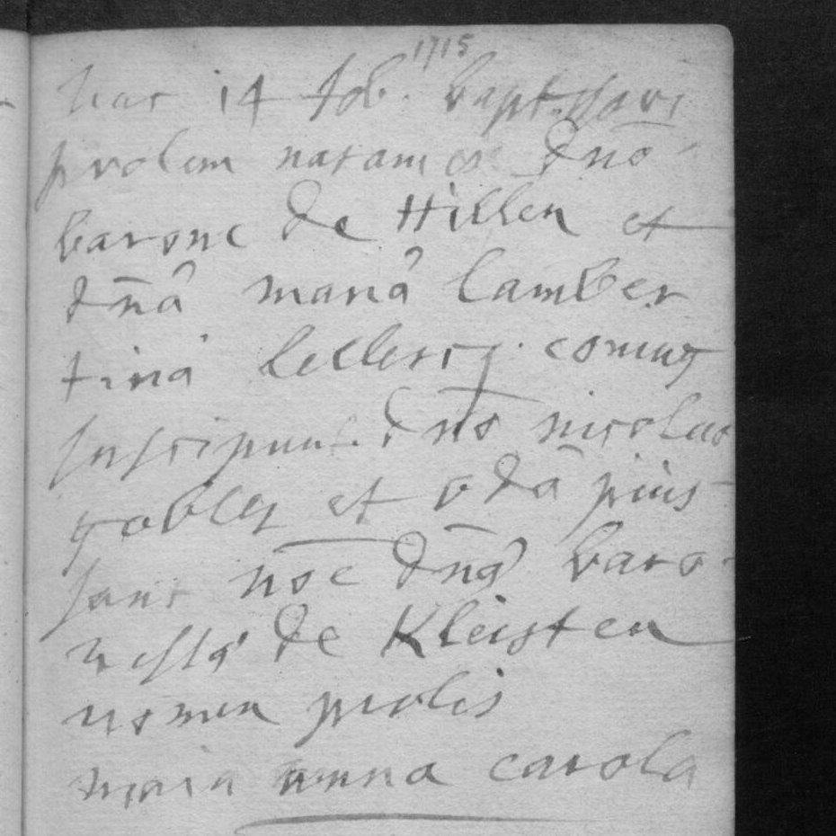
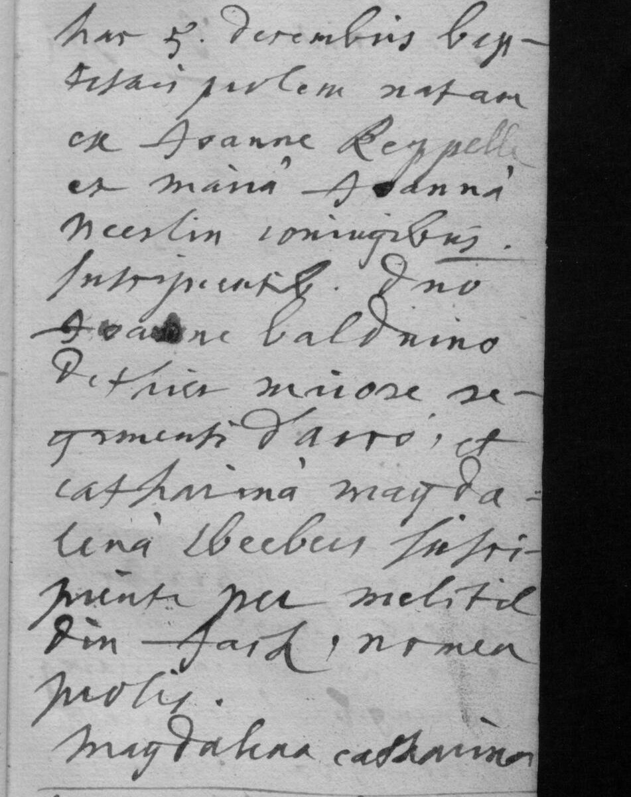
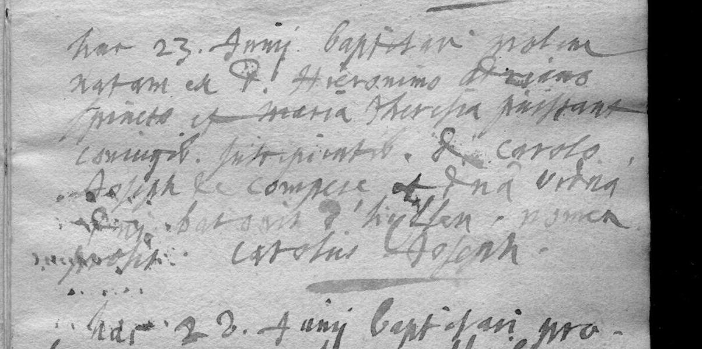
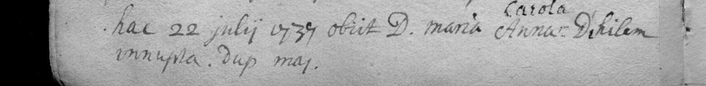
Bronnen: Rijksarchief in België, parochieregisters Châtelineau (huwelijken 1710) en Châtelet (dopen 1704–1738, begrafenissen), scans via AGATHA: huwelijk, hele pagina · doop Louis, hele pagina; Rijksarchief Luik, archief Famille de Hyllen (Y2/655), nr. 1; Habets, Geschiedenis van het bisdom Roermond III (1892), blz. 127.


Prinsbisdom Luik · tussen 1658 en 1787
Open vraag: een kandidatuur voor de adelstand
In het Rijksarchief Luik ligt een dossier "Candidature de R. de Hyllen, des barons de Meldert, de Keverberg et de Greiffenclau, du comte de Hemricourt de Seron": aanvragen om toegelaten te worden tot de adelstand (État Noble) van het prinsbisdom Luik. Zo'n kandidatuur bevat meestal een kwartierstaat.
Wie "R. de Hyllen" is, is onbekend: mogelijk kolonel Reyner, mogelijk een latere Hyllen, bijvoorbeeld een nakomeling van Ludwig Augustin. De datering 1658–1787 geldt voor het hele dossier, niet specifiek voor Hyllen. Daarom staat hij (nog) niet in de stamboom. Het dossier is niet gescand; in te zien in de leeszaal van het Rijksarchief Luik of via een betaalde Repro-scan.
Bron: Rijksarchief Luik, Inventaire des archives des États du pays de Liège et comté de Looz, A3, nr. 695.
Blerick
smeden, kooplieden, brouwers en fabrikanten, 17e–20e eeuw3 plekken · 5 kaarten
Bekijk alle Hillen-plekken in Blerick op één kaart → Huizen, bedrijven en foto's, met links naar de beeldbank van Heemkundekring Blariacum.
Blerick en Venlo · 1545–1843
Blerick op oude kaarten
Blerick ligt recht tegenover Venlo, aan de andere kant van de Maas. Het dorp hoorde tot 1940 bij de gemeente Maasbree, maar lag dichter bij de vestingstad aan de overkant dan bij het eigen gemeentehuis; de overtocht ging lang met het veer. Vanaf 1627, toen Joannes Hillen in Blerick trouwde, woonden hier steeds Hillens. De kaarten laten zien hoe klein het dorp lange tijd was en hoe dicht het tegen Venlo aan lag. Klik op een kaart om hem groot te zien.
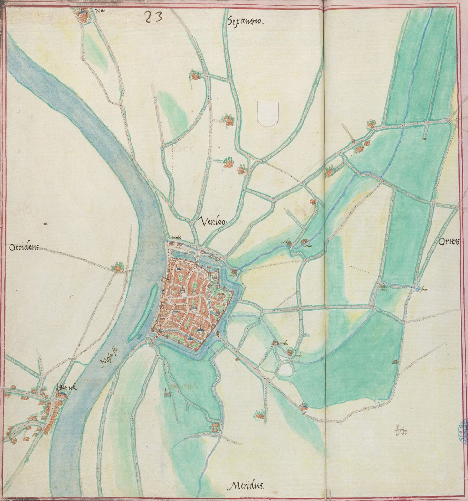
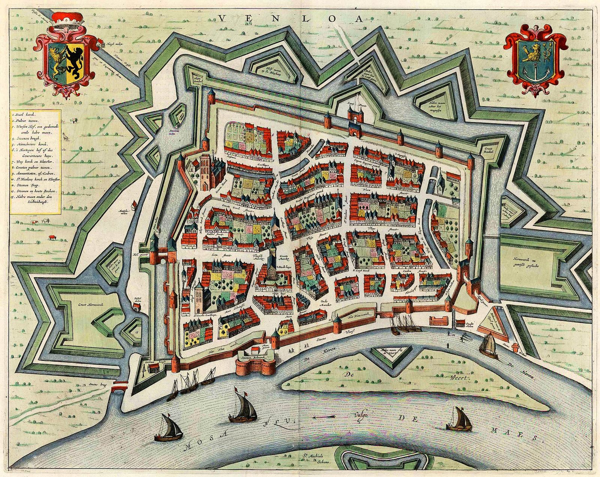
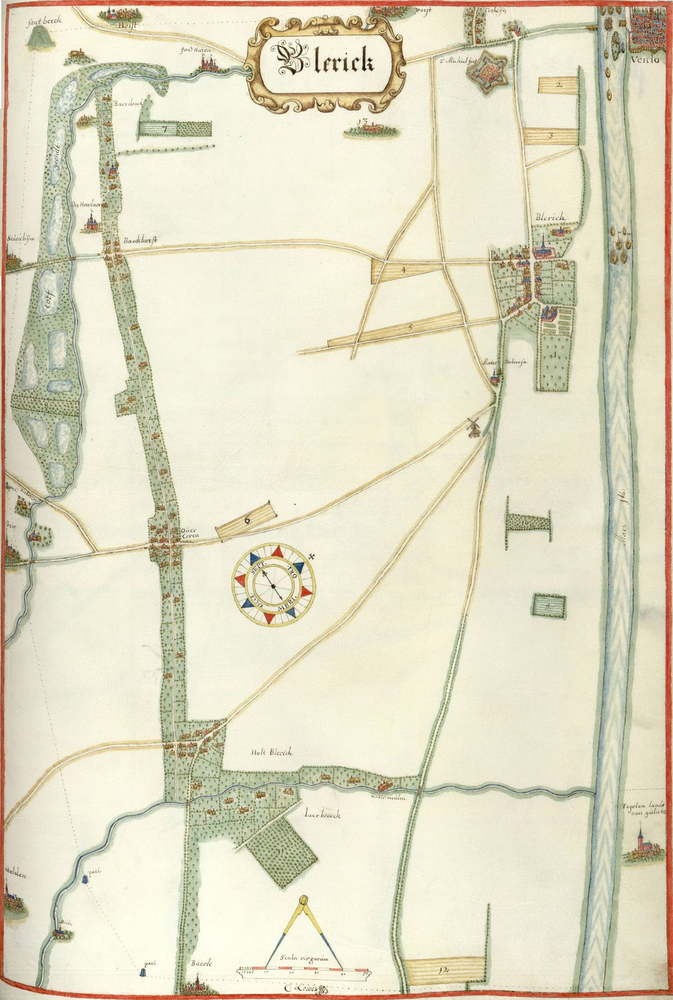
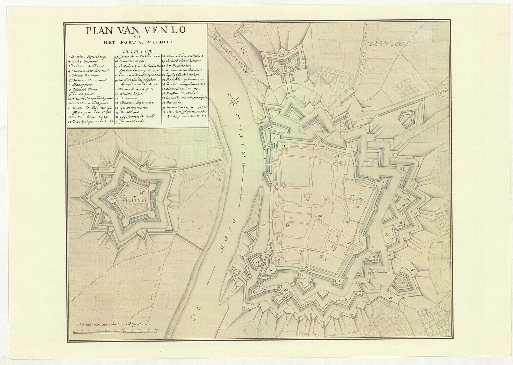
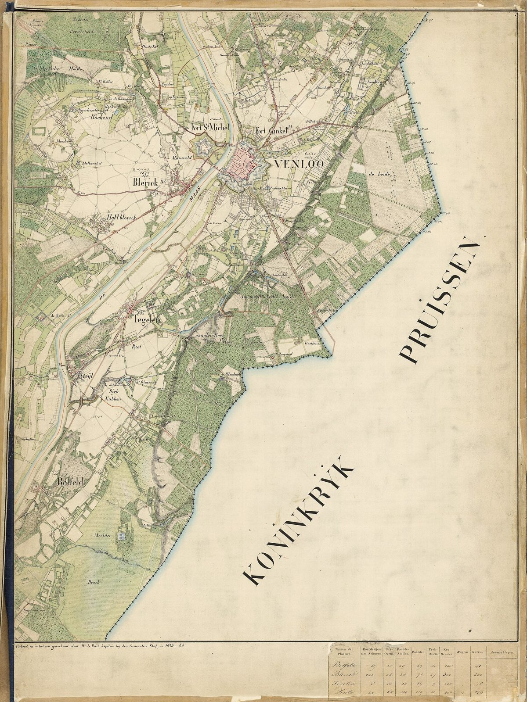
Kaarten via Wikimedia Commons: Van Deventer 1545 (publiek domein), Blaeu 1652 (publiek domein), Lowis 1677 (publiek domein), Plan van Venlo en het Fort St. Michiel (CC BY-SA 4.0; heruitgave Canaletto 1977 naar C. de Haan), W. de Petit 1843 (CC0). Veel meer kaarten, van de Romeinse tijd tot nu, op Heuijerjans.net, "Blerick Cartografisch".
Dorpskern Blerick · kadaster 1832
Het huis van smid Albert Hillen
In 1832 legde het nieuwe kadaster van elk perceel vast wie de eigenaar was. In het register van Blerick (gemeente Maasbree, sectie A) staat één Hillen: "Hillen, Albert, smid, Blerick", artikel 373. Dat is hoefsmid Alardus (Albert) Hillen, de zoon van Caspar. Zijn huis was perceel A480, met een tuin erachter (A481), midden in het dorp, ten zuidwesten van de oude Sint-Lambertuskerk aan de Maas. Daarnaast bezat hij ruim twintig stukken grond, verspreid over Blerick: bos, hakhout, akkerland en weiland. Het huis lag aan de Kloosterstraat, op de plek van het huidige nummer 10. In het bevolkingsregister van 1843–1852 heet het "Blerick 239": daar woonde Albert, "hoefsmid", met Lucia Grubben en hun kinderen, onder wie de tweeling Alexander ("Sanger Hille") en Johan van de latere ijzergieterij. Buren waren kuiper Godfried Wijhers en herbergier Leonard Spee. Het oude huis bestaat niet meer: het huidige pand Kloosterstraat 10 (met winkels) is volgens de BAG in 1956 gebouwd. De Kloosterstraat, vroeger de Koestraat naar het veer, werd na de oorlog grotendeels opnieuw opgebouwd; de Markt van toen is het huidige Antoniusplein.
Waar lag zijn grond? In de eigenarenlijst van 1832 staan bij Albert (artikel 373) achttien percelen (huis en erf meegeteld), samen ongeveer 6,8 hectare. De meeste zijn op de kaarten terug te vinden (zie het overzicht en de uitsneden hieronder). Ze lagen over het hele dorp verspreid: bos langs de beek bij de grens met Grubbenvorst (A137, A138 en A2247), bouwland in de strook langs de Maas (A270), bouwland ten westen van het dorp (A877, en A903 aan de zuidrand), twee smalle stroken moeras en hakhout in het broek, het natte lage land (A1533 en A1535), en lange stroken op de Blerickse heide (A2012, bijna een hectare) en langs de Pelskensdijk (A2056, ook bijna een hectare). Het grootste stuk, A2323 (1,8 hectare), heb ik op de kaart nog niet gevonden.
En Alexander? Alexander trouwde in 1853 met Petronella Bollen, dochter van blauwverver (stoffenverver) Pieter Andries Bollen en winkelierster Gertrudis Rutten. Hun huis met blauwververij was in 1832 perceel A1852 ("huis en erf, blauwververij"), op de hoek vlak bij de kerk; in het register van 1843–1852 is dat "Blerick 200". In het register van 1850–1862 staat Alexander, "koopman", bij zijn schoonmoeder ingeschreven. Daar zal de manufacturenwinkel (stoffenwinkel) van "Sanger Hille" vandaan komen: hij nam de zaak van de familie van zijn vrouw over.
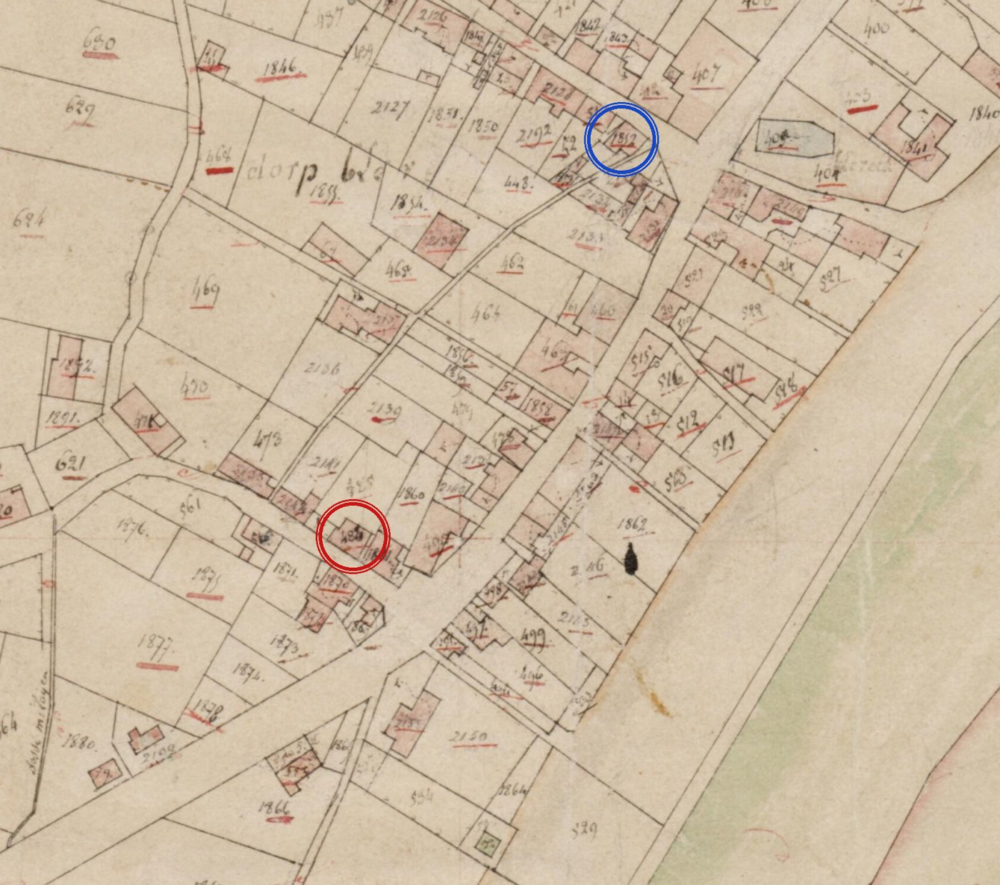
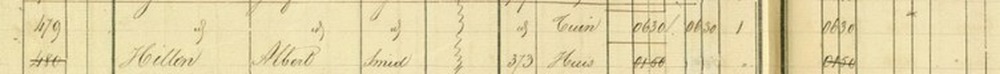
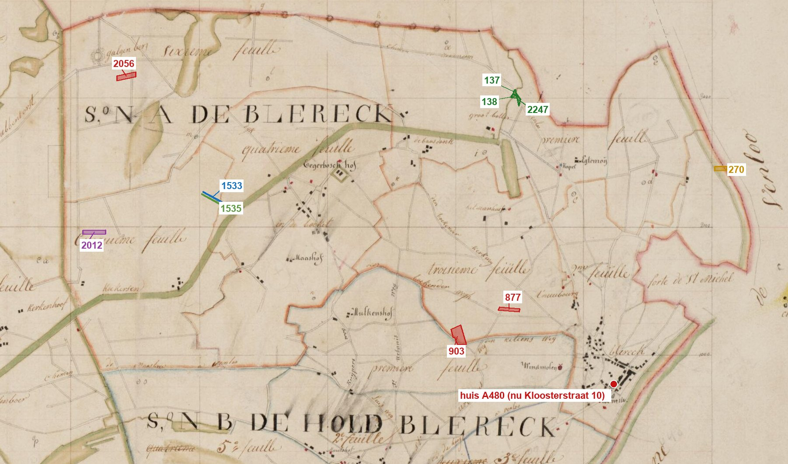
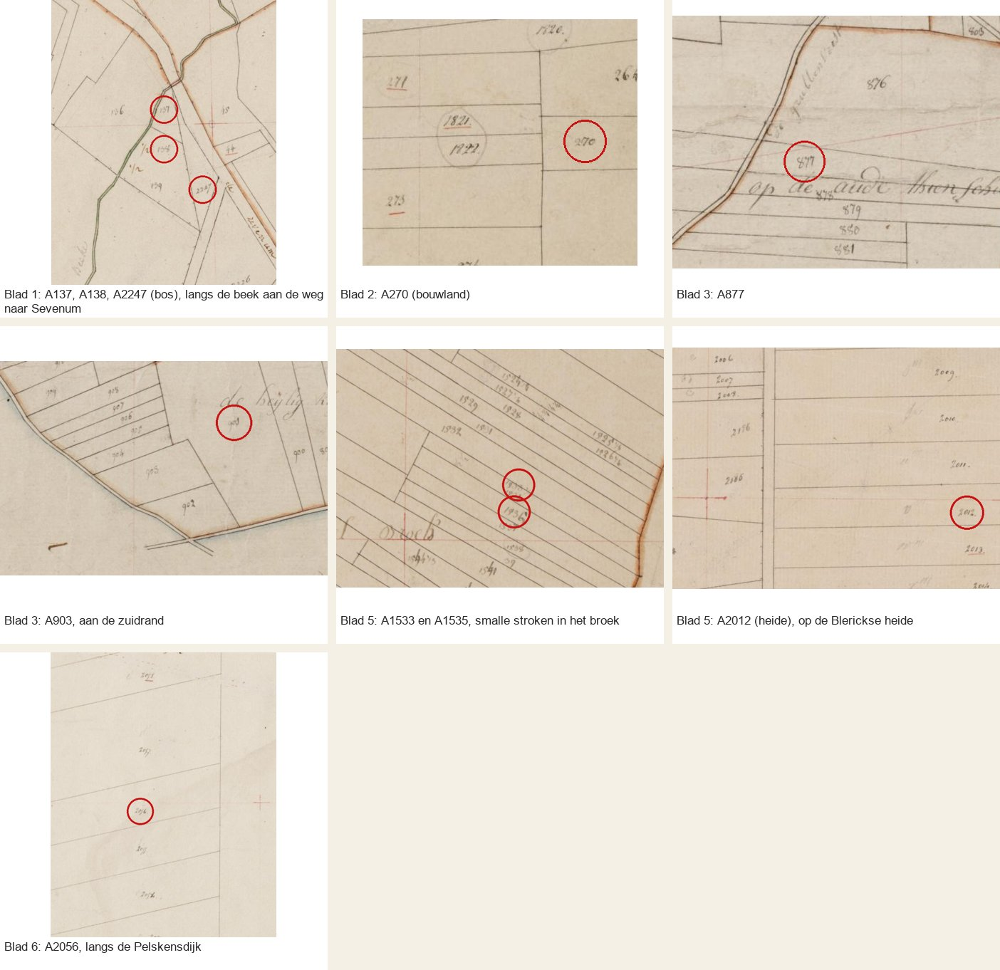
Bron: Rijksdienst voor het Cultureel Erfgoed, beeldbank, oorspronkelijk aanwijzende tafels Maasbree sectie A en minuutplannen MIN11056A01–A06 (publiek domein); BAG (bouwjaar Kloosterstraat 10); BAAC, cultuurhistorische verkenning centrum Blerick (bijlage bestemmingsplan, 2013); bevolkingsregisters Maasbree/Blerick 1843–1852 en 1850–1862 (Peel en Maas, via Open Archieven).
Maasbreesestraat, Blerick · ca. 1860–1924
De brouwerij, de rosmolen en het café
Naast de smeden en kooplieden was er in Blerick ook een brouwende tak. Gerard Hillen (1829–1881), een achterkleinzoon van Alardus Hillen en Agnes Gommans via hun zoon Nicolaas, en zo de zoon van een volle neef van smid Albert, trouwde in 1861 in Venlo met herbergierster Catharina Schreuders (ook geschreven als Schröder). Hij werd tapper en brouwer. Brouwerij Hillen lag op de hoek van de Maasbreesestraat en de Averbodestraat. In 1867 kocht Gerard de rosmolen van Geurts, een molen die door een paard werd rondgetrokken. Daarna werd er mout mee gemalen voor het bier. Zijn zoon Willem Albert was ook bierbrouwer, maar stierf in 1901 op zijn 37e. Zijn weduwe Joanna Gerards was in 1918 cafehoudster. Waarschijnlijk was zij de Hillen van het café met beugelbaan in het Schoolstraatje (nu Sint-Hubertusstraat). Daarvan is een foto uit 1903, en in 1924 werd het café verkocht. Dat het haar café was, moet nog bevestigd worden. Later stond op de plek van de brouwerij de VIVO-kruidenier van de familie Daniëls.
Bronnen: Heemkundekring Blariacum, infotheek Brouwerijen, Rosmolen en beeldbank Beugelbaan Hillen; burgerlijke stand Venlo en Maasbree (huwelijk 1861, geboorte 1864, huwelijken 1892 en 1918, overlijden 1901 en 1922) en memorie van successie Maasbree 1881, via Open Archieven.
Parochie Sint-Lambertus, Blerick · 1627–1789
Wat de doop-, trouw- en begraafboeken vertellen
De Blerickse tak begint met een huwelijk op 7 januari 1627: "Joannes filius Gerardi Hillen Ruremundensis", Joannes, zoon van Gerardus Hillen uit Roermond, trouwt Aleijdis Zillen. Daarna staat de familie anderhalve eeuw in de kerkboeken van Blerick. Een paar momenten:
- Twee namen. Alardus Hillen en Joanna Peemans heten in het gezinsblad ook "Hillen [Janssen]" en "Peemans [Coelenvangers]": Alardus werd in het dorp ook naar zijn vader Jan genoemd.
- De rooie loop van 1702. In september 1702 werd Venlo belegerd en Fort St. Michiel bestormd. Daarna heerste dysenterie, de "rooie loop". Blerick begroef dat jaar 53 mensen, tegen 5 à 12 in een gewoon jaar. Zoon Gerardus werd op 16 oktober begraven, Alardus op 17 november en zijn vrouw Joanna op 30 november.
- Getrouwd met dispensatie. Joannes Hillen en Aldegondis de Trap waren familie van elkaar. In 1698 trouwden zij "cum dispensatione in tertio et quarto mixto consanguinitatis gradu", met toestemming van de kerk: ze hadden een gemeenschappelijke voorouder, voor de een drie en voor de ander vier generaties terug. "De Trap" was overigens een bijnaam van haar vader, Joannes Claessen; haar moeder was Itta Hermans, uit een familie die al in 1627 getuige was bij het eerste Hillen-huwelijk in Blerick.
- Drie broers naar Holland. Van de negen kinderen van Alardus Albertus Hillen en Agnes Gommans trouwden Alardus en Gerrit in Delft en Martinus in Schiedam; hun oom Johannes Nicolaas zat er al sinds 1738. Gerrit begon in 1770 de sigarenfabriek in Delft. Caspar bleef in Blerick.
- Een peter uit Delft. Toen Caspars zoon Alardus op 26 januari 1789 werd gedoopt, was de peter "Gerardus Hillen", de sigarenfabrikant, die zich liet vertegenwoordigen. Vier maanden later, op 4 juni 1789, stierf Caspar; in dezelfde weken stierven ook zijn broer Alardus in Delft en zijn zus Aldegondis in Blerick. Zijn weduwe Dorothea Sanders hertrouwde in 1790.
Bronnen: Land van Kessel, gezinsbladen en transcripties van de DTB Blerick en Baarlo; Blièrick d'r waas ens, "Blièrick kleurde donker roeëd (1702)"; Wikipedia, "Siege of Venlo (1702)".

Kloosterstraat · 19e–20e eeuw
Het huis van "Sanger Hille"
Wie van de Markt naar de Pool liep, zag links eerst het huis van Alexander Hillen, "Sanger Hille". Hij had er de enige manufacturenwinkel (stoffenwinkel) van Blerick. Zijn zoon Louis woonde er nog tot na de oorlog.
Bron: Blièrick d'r waas ens, "Kloosterstraat in Blerick". Foto: brandweer Blerick 1901–1921, familiearchief.
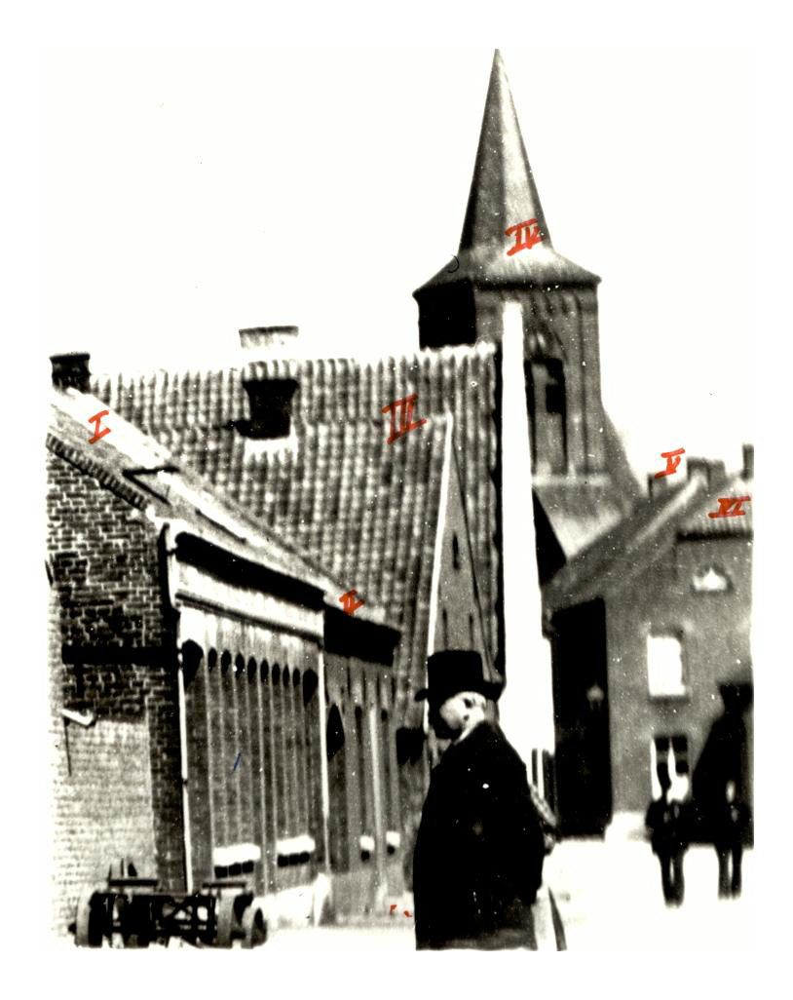
Pontanusstraat · 1877–1916
De ijzergieterij van Johan Hillen
De grootste fabriek van Blerick, met rond 1884 zo'n honderd man personeel. Op deze foto uit 1885 is het gebouw links, met I gemarkeerd, "Hillen, fabrikant". Op de plek staat nu winkelcentrum La Plaza.
De Maasbrug naar Venlo. De eerste vaste brug tussen Blerick en Venlo was de spoorbrug van 1865. In 1886 kwam er een tweede brug naast, op dezelfde pijlers. De Blerickse aannemer Joh. Hillen kreeg de opdracht om de oude brug daarvoor op haar pijlers te verschuiven; op 25 november 1886 liep heel Venlo uit om dat te zien. Daarna diende de oude brug alleen nog voor gewoon verkeer. De Duitsers bliezen haar op 25 november 1944 op.
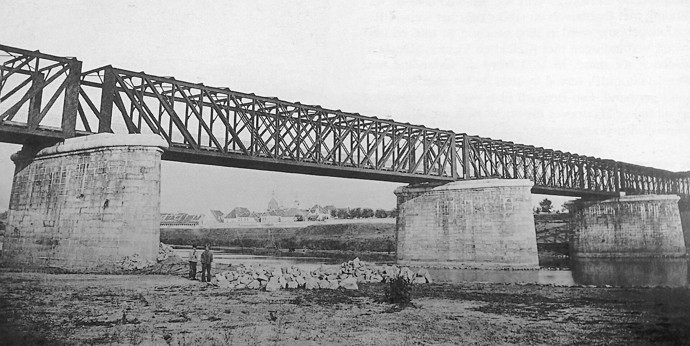
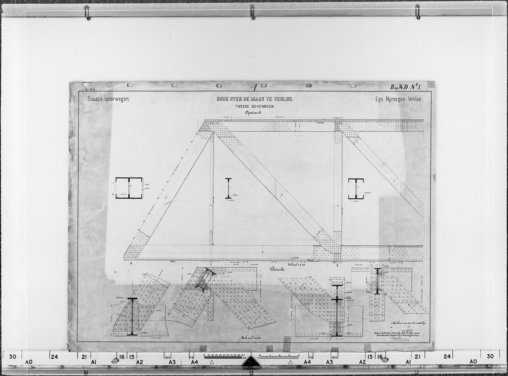
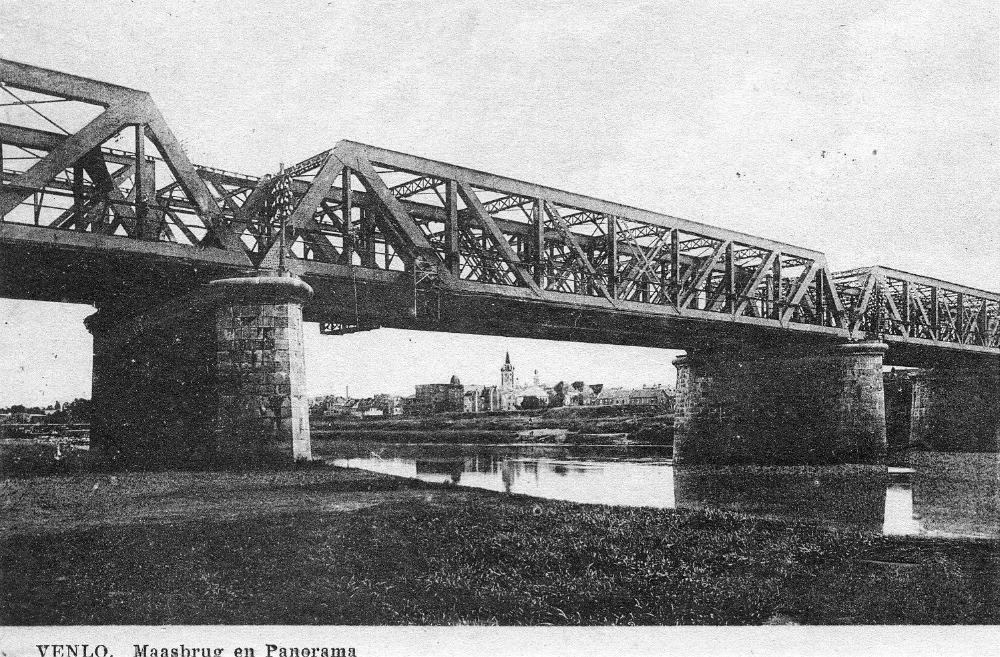
Lees het artikel → · brug: Heuijerjans.net, naar de Blericklopedie, Wikipedia, "Oude Maasbrug Venlo"; brugbeelden via Wikimedia Commons (publiek domein): 1865, 1884, 1908 · foto: Wikimedia Commons (publiek domein).
Vught
twee generaties dokters, 1889–19712 plekken
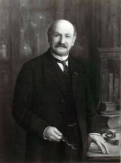
Maurickplein 1 · 1911–1964
De dokterswoning aan het Maurickplein
Dr. Peter Henricus Hillen liet zich hier in 1911 een villa met praktijk en eigen apotheek bouwen. Zoon Felix nam het huis in 1943 over. De apothekerskast staat nu in het Vughts Museum in DePetrus. De Dokter Hillenlaan is naar beide artsen genoemd.

Taalstraat 181 · vanaf 1927
De eerste praktijk van dr. Felix Hillen
Na zijn huwelijk in 1927 begon Felix Hillen hier zijn huisartsenpraktijk. In 1943 verhuisde hij naar het Maurickplein.
Bron: Vughts Museum; foto: Rosemoon, Wikimedia Commons (CC BY-SA 4.0).
Delft en Bree
de sigaren- en pijpenmakers2 plekken
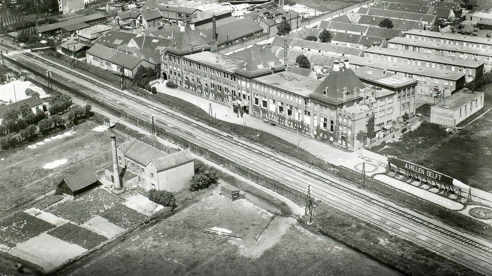
Oude Delft 63, hoek Pepersteeg · 1770–1937
Het Rode Anker
In 1770 begon Gerrit Hillen, uit de Blerickse tak, hier de oudste sigarenfabriek van Nederland. Het woonhuis en pakhuis "het Rode Anker" gaf zijn naam aan het merk. Later groeide de fabriek uit tot het complex langs het spoor op de foto.

Bree, België · 1883–1980
De pijpenfabriek Hilson
Via een huwelijk in 1883 kwam de pijpenfabriek van de familie Knödgen bij de Hillens. Het merk Hilson staat voor "Hillen and Sons".
Straten met de naam Hillen
waar de familie in het straatbeeld staat5 straten
- Dokter Hillenlaan, Vught — genoemd naar dr. Piet Hein Hillen en zijn zoon dr. Felix Hillen, de dorpsdokters van 1889 tot 1971. Artikel →
- Hillenlaan, Delft (wijk Delftzicht, 1994) — genoemd naar de sigarenfabriek A. Hillen, die in die omgeving stond. Artikel →
- Wethouder Hillenstraat, Venlo (wijk Groenveld, eind jaren tachtig) — genoemd naar Jozef Hillen, wethouder van Venlo 1946–1958.
- Schepen Hillenstraat, Roermond (Maasniel) — vermoedelijk naar de Hillens die eeuwenlang schepen van Roermond waren. De straat ligt vlak bij de oude hof van de familie aan het Gebroek. Nog niet bevestigd.
- van Hillenstraat, Helden — vermoedelijk naar de jonkers Hillen tot Helden van huis Ten Hove. Nog niet bevestigd.
De Hillenstraat in Lichtenvoorde en de Willie Hillenstraat in Sittard gaan waarschijnlijk over andere families. Bronnen: straatnamen via PDOK/BAG; De Straten van Delft; Het Klaverblad.